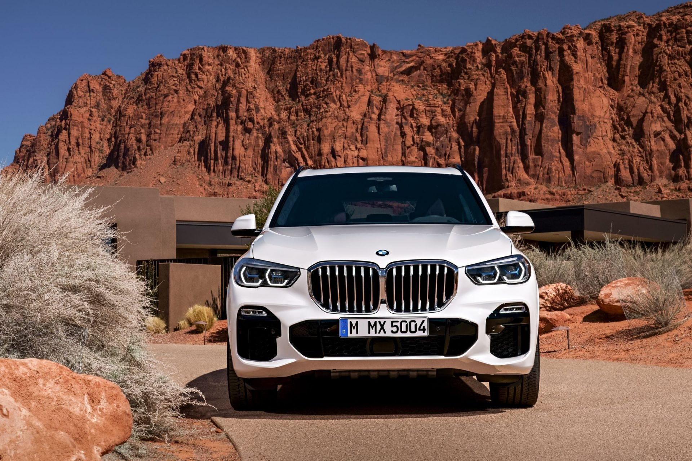
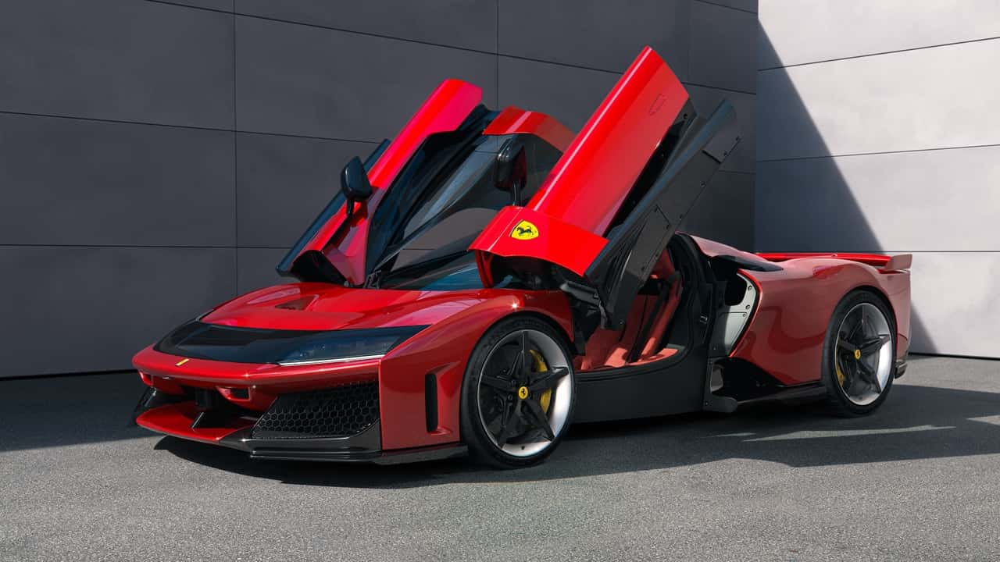

Bem-vindo
Seja bem-vindo ao AutoVerso, o seu novo ponto de partida para explorar tudo o que move o mundo automotivo. Mais do que um portal de carros, somos um espaço para apaixonados por máquinas, tecnologia, velocidade e inovação sobre rodas.
Aqui você encontra análises imparciais, comparativos entre modelos, tendências que moldam o futuro da mobilidade e um mergulho nas marcas que fazem história – desde as gigantes tradicionais até as novas forças do mercado elétrico e sustentável.
Se você quer comprar um carro, aprender mais sobre manutenção, conhecer os lançamentos ou apenas matar a saudade de clássicos que marcaram época, o AutoVerso foi feito para você.
🚗 Principais Marcas Automotivas
🔵 Toyota – Confiabilidade e Inovação
A Toyota é referência mundial em durabilidade e eficiência. Modelos como o Corolla e o RAV4 são ícones de confiabilidade, enquanto a marca lidera o segmento híbrido com o Prius.
🟠 Volkswagen – Tradição Alemã com DNA Global
Com modelos como o Golf, Tiguan e o Polo, a Volkswagen alia performance, design e segurança. Sua linha elétrica ID., com destaque para o ID.4, representa um novo momento para a marca.
🟣 BMW – Luxo, Tecnologia e Performance
A BMW combina o prazer de dirigir com inovação premium. A marca avança na eletrificação com modelos como o i4 e o SUV iX, sem perder a essência esportiva.
🔴 Ferrari – A Alma da Velocidade
Ícone absoluto de desempenho e design, a Ferrari produz verdadeiras obras de arte sobre rodas. O modelo SF90 Stradale, com mais de 1.000 cv, mistura tradição e futuro com seu motor híbrido.
🟢 Tesla – A Revolução Elétrica
Referência mundial em inovação automotiva, a Tesla é pioneira em veículos elétricos com tecnologias como piloto automático e atualizações via software.

| Modelo | Motor | 0-100km/h |
|---|---|---|
| Toyota Corolla | 1.8 Híbrido Flex | 10,8s |
| BMW i4 | 100% Elétrico | 5,7s |
| Tesla Model 3 | 100% Elétrico | 6,1s |
| VW Jetta GLI | 2.0 TSI Turbo | 6,7s |
As Melhores Marcas de Carros em 2025 (YouTube)
Chegamos ao fim desta jornada por dentro do universo automotivo, mas o AutoVerso está sempre em movimento.
Se você é apaixonado por carros, inovações, velocidade ou apenas quer fazer a melhor escolha na hora de comprar, saiba que este espaço estará sempre atualizado com as últimas novidades e análises confiáveis.
Volte sempre, compartilhe com outros entusiastas e continue explorando esse universo que nunca para de evoluir.
Nos vemos na próxima curva da estrada!